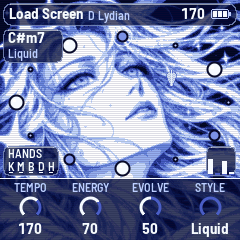
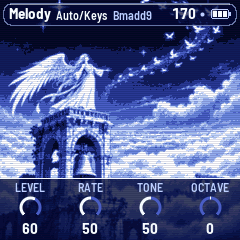
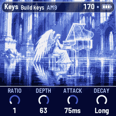

AQ-1
A generative light drum & bass instrument for the M-VAVE FM-1, in the mood of console menus and loading screens from the 2000s: warm, calm and hopeful, as if something is about to begin. It composes chords, rhythms and melodies without end, and you decide what plays.



Get it
- Try it in the browser: the same code the FM-1 runs, with sound. No FM-1 needed.
- Install v0.9: from Chrome or Edge, with the FM-1 connected by USB. Nothing to install on the computer.
- Manual: getting started in a few minutes, then everything else.
- Download aq-1-0.9.fwsc: for the command-line installer,
python3 base/tools/fm1_install.py aq-1-0.9.fwsc.
What it does
- You lead. It powers on with only the keys and the pad. The melody, the bass, the drums and the hats come in and go out at your press. Switch a piece to Auto and it plays itself.
- Chords and rhythm. Chords, breaks and rhythms are composed as it plays, by the rules of the genre. There are no recorded breaks.
- The melody. Let it compose phrases, run an arpeggio with its patterns and skip, or play it yourself on the keys, with latch.
- Sounds. Choose a sound for each layer, or build your own: ratio, depth, attack, decay, release.
- Eight pieces, each remembering how you left it, its scale, sounds and effects.
To go back to the official firmware, use the installer's "Back to the stock firmware". M-VAVE and FM-1 are trademarks of their owners. AQ-1 is not affiliated with M-VAVE. Forked from AMB-1 by Charles Vestal, built on fm1-base and felucca-bsp, from Felucca by Leo Kuroshita (Hügelton Instruments). The code is under MPL-2.0, source on GitHub. The screen's art is © 2026 Moon1ord, all rights reserved: install, use and share unchanged packages, nothing more (details).